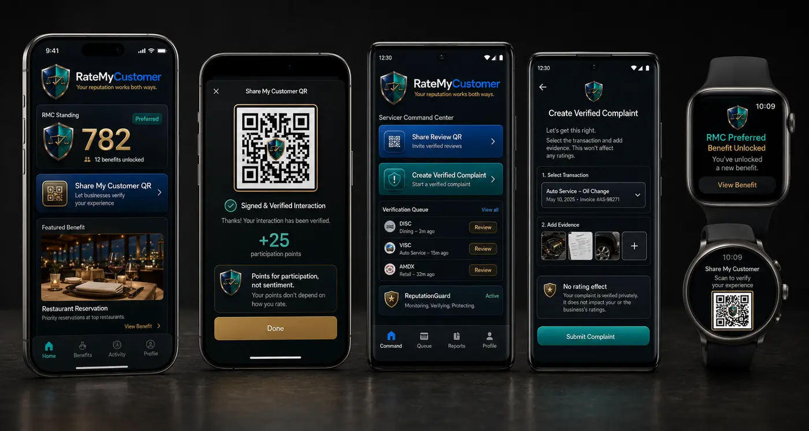
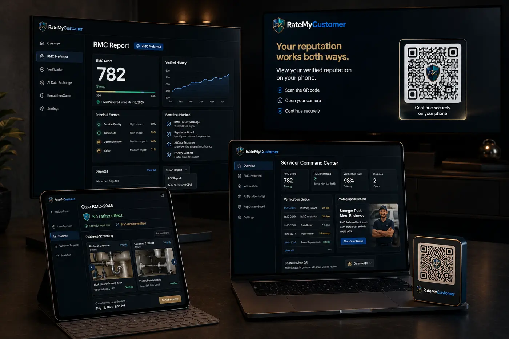

Mobile and wearable system
Customer Standing → signed QR → participation points; Servicer Command Center → verified complaint → no-rating-effect evidence gate; watch benefit and QR access.
APPROVED BRAND · CONNECTED FLOWS
Photorealistic device compositions translate the approved shield, materials, colors, and operational wireframes into native platform experiences.


Real device materials, OLED depth, brushed metal, enamel and restrained dimensional controls.
Every screen maps to an approved workflow rather than serving as decorative concept art.
Verification, response, no-rating-effect and honest-review protections remain visible.
The same RMC language, hierarchy and status logic adapts across device constraints.